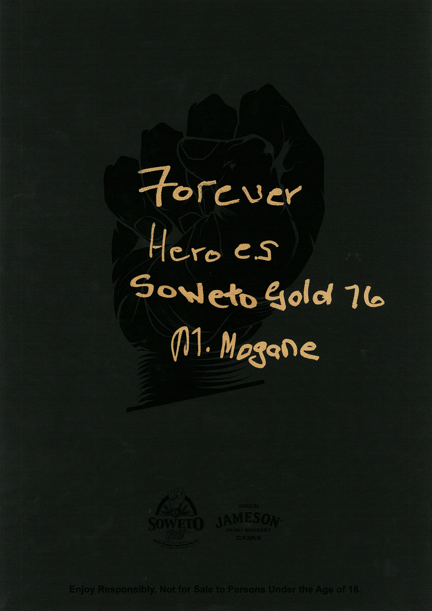
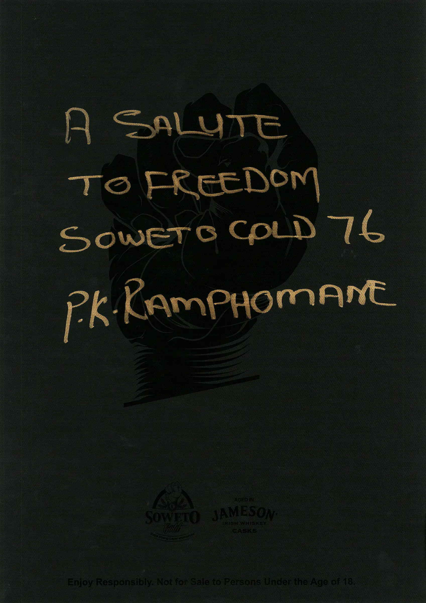
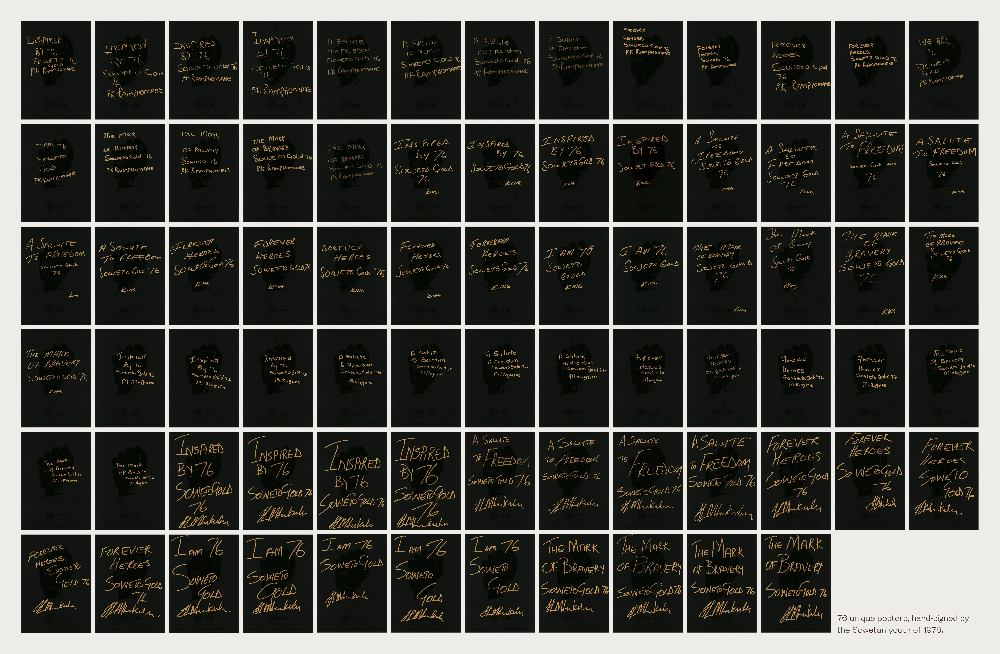
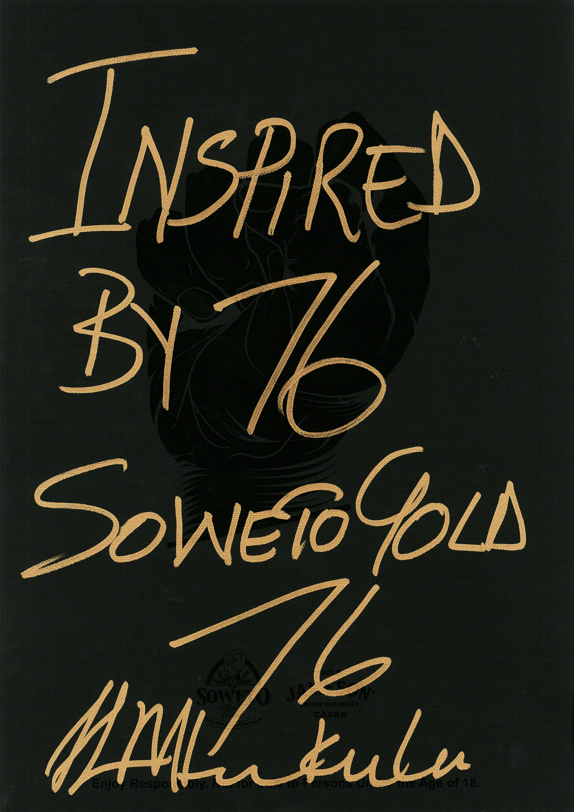
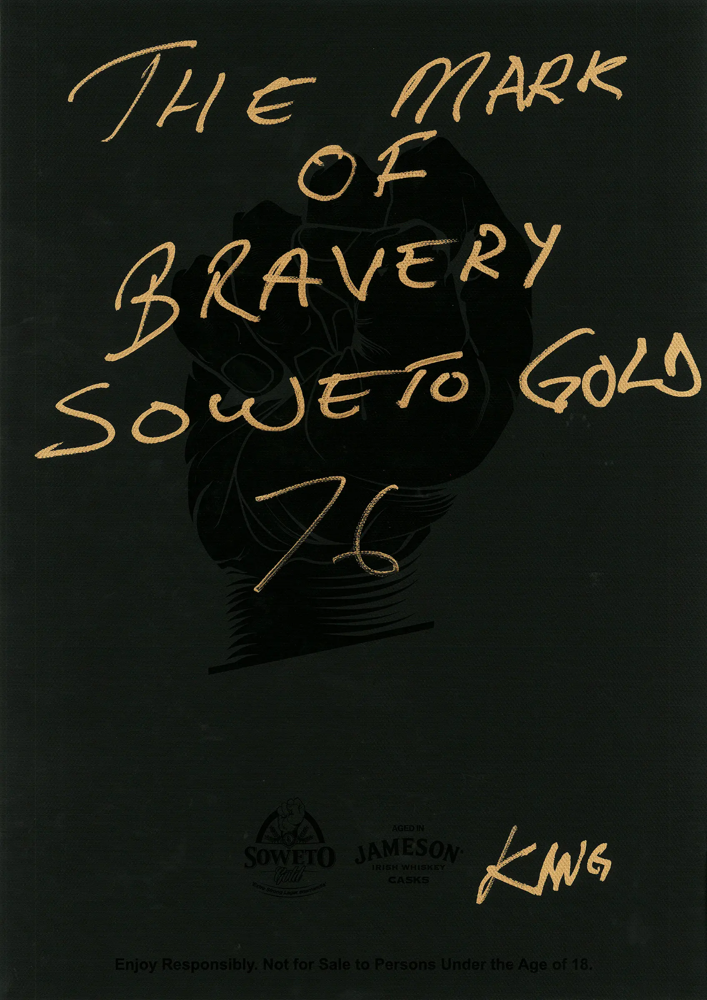

South Africa
We were given a brief to turn a collaboration between Jameson Irish Whiskey and Soweto Gold Craft Beer into a meaningful tribute to the heroes of Soweto’s past on the 40th anniversary of the 1976 Uprising. We created a limited edition craft beer named Soweto Gold ‘76. This was in acknowledgement of the brave youngsters who stood up for freedom – the freedom that allows for Soweto Gold to be produced in Orlando West by Ndumiso Madlala today.
But the tribute didn’t end there. 76 bottles were pulled out of the production run, to be personally branded by the Sowetan youth of 1976. Each bottle was the product of the hand of a veteran in the stand for freedom. Paired with a hand-written poster, the 76 unique bottles were put up for individual auction online. PR kits were sent to influencers to amplify awareness of the auction, with proceeds being collected for donation to the Dr. Nthato Motlana Foundation’s ‘Spirit of Youth’ programme, nurturing today’s school leaders in Soweto and beyond.
Through Soweto Gold’s tribute to their bravery, the youth of ‘76 once again took their chance to set Soweto’s future free.
The collaboration with Jameson Irish Whiskey took on the greatest possible meaning: the Jameson family motto is Sine Metu, Latin for ‘without fear’. There can be no better description for the youth of 1976. And there can be no better tribute to their brave contribution to freedom, than another contribution by their very hands.
Awards
1 Bronze Cannes Lion (Package Design)
1 Bronze One Show Award (Static typography)
1 Bronze One Show Award (Speciality packaging)
1 Bronze Loeries Awards (Package design)
1 Bronze Loeries Awards (Poster design)
Credit
Agency: OpenCo
Chief creative officer: Louis Gavin
Executive creative director: Rob Rutherford
Creative director: Darren Borrino
Art directors: Osmond Tshuma, Jo Morrison
Designer: Osmond Tshuma
Writers: Jason Hes, Peet Engelbrecht
Account management: Roxanne Renecke, Mel Daniels
Brand representative: Josef Schmid